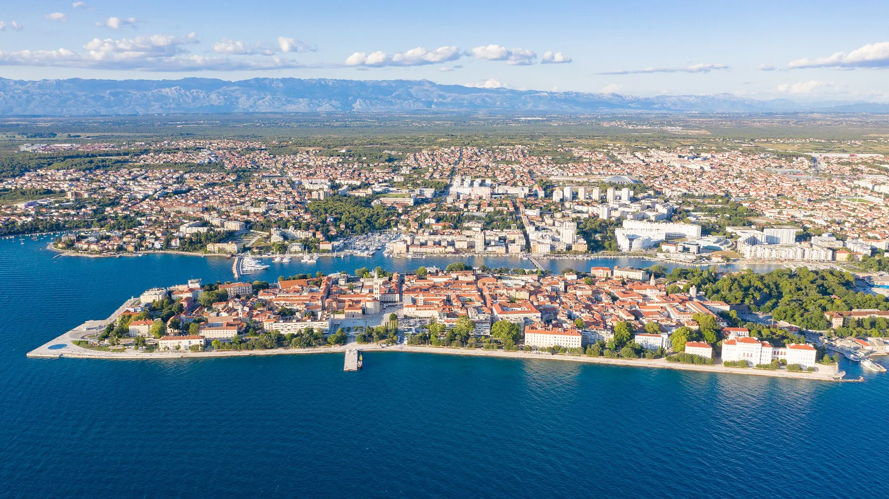
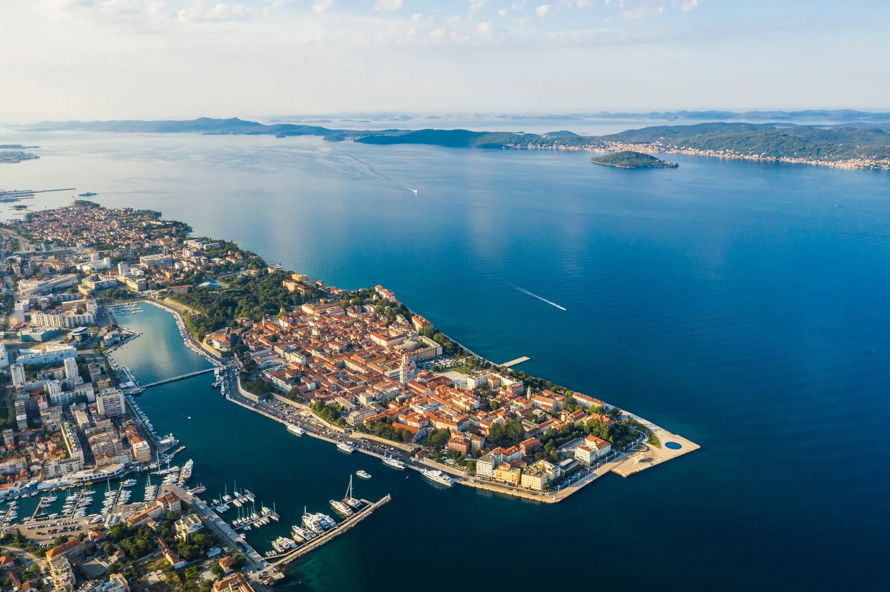
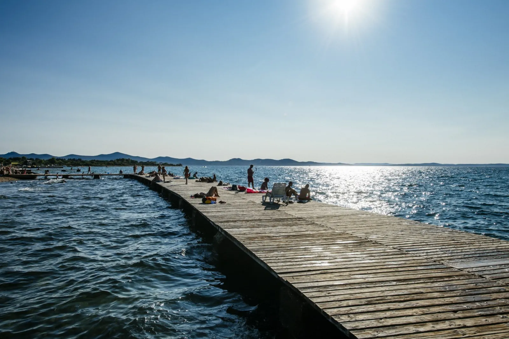

Zadar se nalazi u sjevernoj Dalmaciji, u samom središtu istočne obale Jadranskog mora, što ga čini jednim od najvažnijih geografskih i prometnih središta hrvatskog priobalja. Smješten je na prirodnom poluotoku koji ulazi u more i gleda prema Zadarskom arhipelagu, skupini otoka i otočića koji stvaraju jedan od najrazvedenijih obalnih krajeva na Mediteranu. Ovaj jedinstveni položaj omogućuje Zadru prirodnu zaštićenost od otvorenog mora, ali i bogatu povezanost s pomorskim putovima.

Grad leži na prijelazu između Ravnih kotara, plodne i nisko valovite unutrašnjosti, te Jadranske obale, čime zauzima prostor u kojem se susreću mediteranski i kontinentalni elementi reljefa. Zadar je udaljen oko 300 kilometara južno od Zagreba, 150 kilometara sjeverno od Splita, a u neposrednoj je blizini značajnih prometnih pravaca koji povezuju sjever i jug Hrvatske. Upravo taj položaj omogućio je da Zadar povijesno bude administrativno, kulturno i gospodarsko središte šire regije.

Obalni pojas oko Zadra izuzetno je razveden. Ispred grada proteže se niz otoka raspoređenih u više lanaca: Ugljan i Pašman najbliži su obali i štite Zadarski kanal, dok Dugi otok, Molat i Silba čine vanjski obrambeni pojas prema otvorenom moru. Ovaj položaj stvara prirodno mirne morske puteve, idealne za brodski, trajektni i turistički promet, ali i jedinstvenu kombinaciju zaštićenog akvatorija i otvorenog Jadrana.
Zadar ima tipičnu mediteransku klimu: duga, suha i sunčana ljeta, te blage i vlažne zime. Blizina mora i otoka ublažava ekstremne temperature, dok povremeni vjetrovi poput bure, juga i maestrala oblikuju lokalne vremenske prilike. Upravo zbog specifičnog geografskog položaja Zadar ima jedan od najugodnijih klimatskih režima u Hrvatskoj, što je jedan od ključnih razloga dugog turističkog razdoblja i razvoja obalnih aktivnosti.

Osim pomorske važnosti, Zadar ima i vrlo dobru kopnenu povezanost. U blizini grada prolazi autocesta A1, koja omogućava brzu vezu sa Zagrebom i Splitom, dok se Zračna luka Zadar nalazi samo dvadesetak minuta od centra grada, spajajući ga s brojnim europskim destinacijama. Sve to čini Zadar središnjom točkom između kontinentalne i mediteranske Hrvatske.
Zbog svega navedenog, Zadar predstavlja spoj povoljnog geografskog položaja, zaštićenog morskog akvatorija, mediteranske klime i izvrsne prometne povezanosti, što ga čini jednim od najatraktivnijih i najvažnijih gradova hrvatske obale.